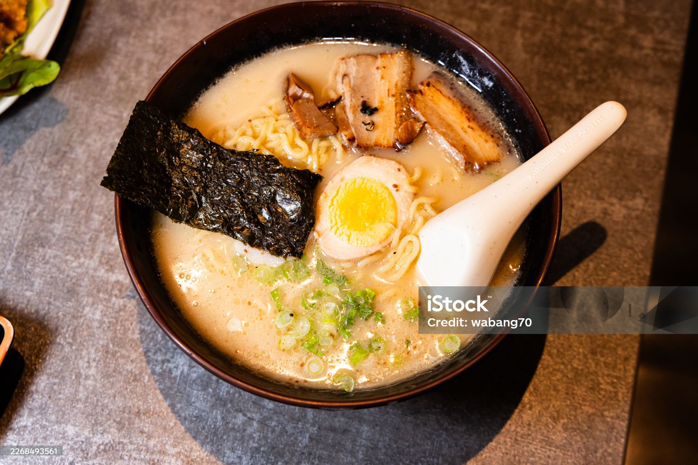

Introdaction

Japanese food is known for its variety, fresh ingredients, and unique flavors. Japan has many different types of food, from traditional dishes to popular modern meals. Each region of Japan also has its own local foods and specialties.
Some popular Japanese foods include sushi, ramen, tempura, and okonomiyaki. These dishes are enjoyed by people in Japan and are also popular around the world. Visitors to Japan can try many different foods and discover new flavors in each region.
Popular Attractions
Sushi

Sushi is one of the most well-known Japanese foods. It usually consists of vinegared rice served with ingredients such as fish, seafood, or vegetables. There are many different types of sushi, and each type has its own style and flavor.
Ramen

Ramen is a popular Japanese noodle dish served in a flavorful soup. Different regions and restaurants have their own styles of ramen. Common types include soy sauce, miso, and salt-based ramen. Ramen is a popular choice for both locals and visitors.
Tempura

Tempura is made by lightly coating seafood or vegetables in batter and frying them. It is usually served with a dipping sauce. The light and crispy texture makes tempura a popular Japanese dish.
Okonomiyaki

Okonomiyaki is a Japanese savory pancake made with ingredients such as cabbage, meat, seafood, and other toppings. It is especially popular in Osaka and Hiroshima, where different styles of okonomiyaki can be found.